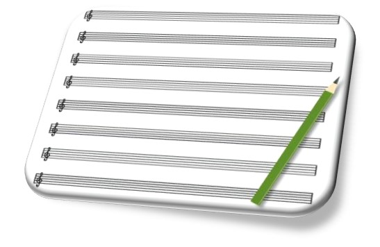

Welcome to the Composer's Journey!
You know, it’s often said that the most important step of one’s journey is the first, and it’s also said that every good piece starts with the first note. If you’ve found yourself here, this must mean one thing: you want to learn how to become a music composer! Maybe one day you want to create music as your profession, or maybe you just want to write music for the sake of it. Whether you’re just starting out, or already a seasoned musician, I’m here to help!
One Journey of Many

[Pictured: one of my personal compositions, charted in FL Studio]
My name is Jeremy, and I’ve started this blog to help impart some of the knowledge I’ve gained in my personal journey to creating music. I’ve been a musician for nearly 20 years: starting with piano, then moving to drums, then finally my voice (so far at least!). After reading somebody else’s music from the sheet for most of my career, I began to feel the need to make my music and express myself, so in late 2022 I began writing and publishing my own pieces online.
“What Do I Want to Accomplish?”
Of course that’s just my personal story, but you? You’ve got your own motivations, your own skillset, and your own musical niche waiting to be carved out. As with any new journey however, it’s important to ask yourself: “What do I want to accomplish?”
For example, you may be writing music just for fun, making pieces to show your friends, or just wanting an outlet to express your thoughts and feelings; on the other hand, you may be composing for a paycheck, which is equally as valid as creating for fun. More likely than not though, you’re looking for a balance between the two. After all, there’s something special about writing the music yourself, showing it to the world, and even getting paid for it. The way I see it, it’s like show and tell from kindergarten but instead of getting a gold star, you get cold hard cash. That’s a pretty good trade, I’d say!
The Future, At a Glance
No matter what your goal is, it’s important to lay down the foundation of what it means to be a composer. Over the next few posts, I’ll be going over what you need to know when writing music in the internet age, as well as helping you get into the mindset of what it means to create music.
Such topics will include:
- Composing in the internet age, and choosing your Digital Audio Workspace
- Music, its importance, and how we fit into the equation
- Choosing your instruments, your audio plugins, and your clientele
- Further talk on clientele, finding your niche, and choosing your genre (or lack of genre)
- Keeping focused on your music goals, and how to keep inspired well into the future
The Coda

Choosing to become a composer can be a daunting task, whether you plan on making it your career or using it as a medium of expression. Take it from me though, just looking up how to become a composer in the first place is already a step in the right direction! Expression of thought and emotion through music is our nature after all, but that’s for another time.
For now, I’d like to thank you for allowing me to help you get started! Never stop creating my fellow composers, I'll see you at the next stop on your journey.